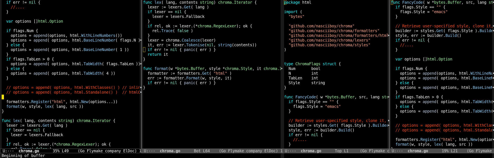

Emacs, configuracion de verano
todo empezo una tarde calida cuando cambie de distro a manjaro, abri el emacs
para ponerme a programar “el morg” (que esta en go) y aparecia un mensaje de
error muuu largo, informando que el flycheck (un modo para verificar el codigo
mientras se va escribiendo) no localizaba la ruta al ejecutable del
flycheck-go. Como no encontraba el origen del problema y queria tunear el
emacs, me propuse abandonar el sistema que tenia para agregar extensiones al
emacs, el cual consistia basicamente en buscar un paquete, clonar el repositorio
del codigo y probar hasta se cargara a lo bestia sin tirar del sistema de
paquetes del que dispone emacs… je, como decir que no me gustan las cosas
automagicas que hacen las cosas sin que me entere, pero bueno, siendo emacs me
dare el lujo de ser un poco mas permisivo
asi pues la nueva configuracion, es de esas sencillitas en las que colocas el paquete que quieres instalar/usar en una orden y luego al abrir emacs se descarga, instala y puede que hasta configure los paquetes que hagan falta, asi a la brava y sin tener ni idea de como
por lo tanto si quieres replicar mi configuracion

por ejemplo para programar en go, c, tener un lector de rss, o iniciar en emacs
con el tema nascii, primero instala emacs, y luego crea una carpeta en tu
home con
wget https://nasciiboy.github.io/data/init-dot-el.zip
unzip init-dot-el.zip -d ~/.emacs.d
rm init-dot-el.zip
emacs
el comprimido con forma de zip, almacena dos ficheros:
init.el, que es donde se coloca toda configuracion de emacs y pondre a
continuacion casi tal cual y nascii-theme.el mi tema de colores personal,
baraje el subirlo a melpa para que tambien forme parte de la instalacion magica,
pero me da peresa y creo que el tema visual es cosa de cada quien, unque desde
luego mi tema es el unico que es correcto y valido…
las extenciones para programar en go requieren que instales las siguientes herramientas
go get -u github.com/nsf/gocode
go get -u github.com/rogpeppe/godef
go get -u golang.org/x/tools/cmd/goimports
go get -u github.com/jstemmer/gotags
por lo demas, solo haria falta substituir todos los /home/nasciiboy por tus
rutas correspondientes
init.el
;;; nascii-config: --- another day in Emacs
;; Substituir /home/nasciiboy (y otras rutas) segun corresponda.
;; el thema nascii
(load-file "~/.emacs.d/nascii-theme.el")
;; fullscreen
(toggle-frame-fullscreen)
;; desactivar barra de (menu|herramientas|desplazamiento)
(menu-bar-mode -1)
(tool-bar-mode -1)
(scroll-bar-mode -1)
;; tamaño de la fuente
(set-face-attribute 'default nil :height 140)
;; inhibir mensajes y pantalla de inicio
(setq inhibit-startup-buffer-menu t)
(setq inhibit-startup-screen t)
(setq inhibit-startup-message t)
(setq inhibit-startup-echo-area-message "usuario")
;; mensaje en el buffer scratch
(setq initial-scratch-message "
;; _____ __ __ _ ____ ____
;; | ____| \\/ | / \\ / ___/ ___|
;; | _| | |\\/| | / _ \\| | \\___ \\
;; | |___| | | |/ ___ \\ |___ ___) |
;; |_____|_| |_/_/ \\_\\____|____/
;; ____ ___ _ ______ _
;; | _ \\ / _ \\| |/ / ___| | |
;; | |_) | | | | ' /\\___ \\ | |
;; | _ <| |_| | . \\ ___) | |_|
;; |_| \\_\\\\___/|_|\\_\\____/ (_)
")
;; hora en formato 24 horas:
(setq display-time-day t display-time-24hr-format t)
(display-time)
;; reemplazar "yes" por "y" en el prompt
(fset 'yes-or-no-p 'y-or-n-p)
;; habilitar narrow & wide
(put 'narrow-to-region 'disabled nil)
;; habilitar upcase-region y downcase-region
(put 'upcase-region 'disabled nil)
(put 'downcase-region 'disabled nil)
;; resaltar apertura y cierre de paréntesis
(setq show-paren-delay 0
show-paren-style 'parenthesis)
(show-paren-mode)
;; visualizar lineas sin truncar ⏎
(set-default 'truncate-lines t)
;; Al borrar cosas moverlas a la papelera.
;; el directorio corresponde a la papelera en gnome3
(setq delete-by-moving-to-trash t
trash-directory "~/.local/share/Trash/files")
;; al escribir en modo texto cortar lineas automaticamente
(add-hook 'text-mode-hook 'turn-on-auto-fill)
;; longitud de lineas
(setq-default fill-column 80)
;; Core settings
;; UTF-8 please
(set-charset-priority 'unicode)
(setq locale-coding-system 'utf-8) ; pretty
(set-terminal-coding-system 'utf-8) ; pretty
(set-keyboard-coding-system 'utf-8) ; pretty
(set-selection-coding-system 'utf-8) ; please
(prefer-coding-system 'utf-8) ; with sugar on top
(setq default-process-coding-system '(utf-8-unix . utf-8-unix))
;; (setq make-backup-files nil) ; detener creacion de ficheros respaldo~ (descomentar)
(setq auto-save-default nil) ; detener creacion de ficheros #autoguardado#
;; colocar todos los ficheros de respaldo en el directorio ~/.emacs.d/backups/
(setq backup-directory-alist `(("." . ,(concat user-emacs-directory "backups"))))
;; espacios en lugar de tabulaciones
(setq-default indent-tabs-mode nil)
;; eliminar espacios en blanco
(add-hook 'before-save-hook 'delete-trailing-whitespace)
;; c++-mode para headers y ficheros C
(add-to-list 'auto-mode-alist '("\\.h$" . c++-mode))
(add-to-list 'auto-mode-alist '("\\.c$" . c++-mode))
;; xml-mode para ficheros xml
(add-to-list 'auto-mode-alist '("\\.xml$" . sgml-mode))
;; dar permisos de ejecución a scripts luego de guardar
(setq after-save-hook
(quote (executable-make-buffer-file-executable-if-script-p)))
;; historial de ficheros abiertos
(require 'recentf)
(recentf-mode t)
(setq recentf-max-saved-items 200)
(global-set-key (kbd "C-c o") 'recentf-open-files)
;; atajos
;; Wind Move <> movimiento entre ventanas
(global-set-key [s-left] 'windmove-left)
(global-set-key [s-right] 'windmove-right)
(global-set-key [s-up] 'windmove-up)
(global-set-key [s-down] 'windmove-down)
;; atajos para emacs cli
(global-set-key (kbd "C-c <left>") 'windmove-left)
(global-set-key (kbd "C-c <right>") 'windmove-right)
(global-set-key (kbd "C-c <up>") 'windmove-up)
(global-set-key (kbd "C-c <down>") 'windmove-down)
;; parrafos
(global-set-key (kbd "C-.") 'forward-paragraph)
(global-set-key (kbd "C-,") 'backward-paragraph)
(global-set-key (kbd "C-q") 'fill-paragraph)
(global-set-key (kbd "C-;") 'delete-indentation)
;; ibuffer en lugar de list-buffers
(global-set-key (kbd "C-x C-b") 'ibuffer)
(global-set-key [f12] 'eval-buffer) ;; evaluar buffer (elips) actual
(global-set-key [f9] 'compile) ;; compilar buffer (por ejemplo en C)
(global-set-key [f7] 'eww) ;; abrir una direccion con eww
;; atajos de eww el navegador incorporado de emacs
(global-set-key (kbd "C-x w o") 'eww)
(global-set-key (kbd "C-x w b") 'eww-add-bookmark)
(global-set-key (kbd "C-x w l") 'eww-list-bookmarks)
(global-set-key (kbd "C-x w f") 'eww-open-file)
;; esto esta muuuuy chulo, cuando abres eshell te permite ejecutar los
;; comandos en la lista como si estubieras dentro de un terminal "real"
(setq eshell-visual-commands '("htop" "vi" "vim" "mocp" "top" "less" "more" "elinks" "elinks" "git" "sr" "surfraw"))
;; en direct coloca el tamaño de los ficheros con formato para humanos
(setq dired-listing-switches "-alh")
;; interpretes
(setq scheme-program-name "racket") ; instalar previamente racket
(setq inferior-lisp-program "clisp") ; instalar previamente clisp
(setq python-shell-interpreter "python3") ; instalar previamente python3
;;;;;;;;;;;;;;;;;;;;;;;;;;;;;;;;;;;;;;;;;;;;;;;;;;;;;;;;
;; ;;
;; ""# " ;;
;; mmmm # m m mmmm mmm m mm mmm ;;
;; #" "# # # # #" "# # #" # # " ;;
;; # # # # # # # # # # """m ;;
;; ##m#" "mm "mm"# "#m"# mm#mm # # "mmm" ;;
;; # m # ;;
;; " "" ;;
;;;;;;;;;;;;;;;;;;;;;;;;;;;;;;;;;;;;;;;;;;;;;;;;;;;;;;;;
;; con esta seccion te permite instalar las extenciones automagicamente
(require 'package)
(add-to-list 'package-archives '("melpa" . "http://melpa.org/packages/") t)
(package-initialize)
(unless (package-installed-p 'use-package)
(package-refresh-contents)
(package-install 'use-package))
(require 'use-package)
(setq use-package-always-ensure t)
;;;;;;;;;;;;;;;;;;;;;;;;;;;;;;;;;;;
;; PACKAGE: company-mode ;;
;;;;;;;;;;;;;;;;;;;;;;;;;;;;;;;;;;;
(use-package company)
(add-hook 'after-init-hook 'global-company-mode)
;;;;;;;;;;;;;;;;;;;;;;;;;;;;;;;;;;;
;; PACKAGE: flycheck ;;
;;;;;;;;;;;;;;;;;;;;;;;;;;;;;;;;;;;
(use-package flycheck)
(flycheck-mode t)
(add-hook 'python-mode-hook 'flycheck-mode)
(add-hook 'emacs-lisp-mode-hook 'flycheck-mode)
;;;;;;;;;;;;;;;;;;;;;;;;;;;;;;;;;;;
;; PACKAGE: magit-mode ;;
;;;;;;;;;;;;;;;;;;;;;;;;;;;;;;;;;;;
(use-package magit)
;;;;;;;;;;;;;;;;;;;;;;;;;;;;;;;;;;;
;; PACKAGE: morg-mode ;;
;;;;;;;;;;;;;;;;;;;;;;;;;;;;;;;;;;;
(add-to-list 'auto-mode-alist '("\\.morg\\'" . org-mode))
(add-to-list 'auto-mode-alist '("\\.porg\\'" . org-mode))
;;;;;;;;;;;;;;;;;;;;;;;;;;;;;;;;;;;
;; PACKAGE: markdown-mode ;;
;;;;;;;;;;;;;;;;;;;;;;;;;;;;;;;;;;;
(use-package markdown-mode)
(add-to-list 'auto-mode-alist '("\\.text\\'" . markdown-mode))
(add-to-list 'auto-mode-alist '("\\.markdown\\'" . markdown-mode))
(add-to-list 'auto-mode-alist '("\\.md\\'" . markdown-mode))
;;;;;;;;;;;;;;;;;;;;;;;;;;;;;;;;;;;
;; PACKAGE: go-mode ;;
;;;;;;;;;;;;;;;;;;;;;;;;;;;;;;;;;;;
;; go get -u github.com/nsf/gocode
;; go get -u github.com/rogpeppe/godef
;; go get -u golang.org/x/tools/cmd/goimports
;; go get -u github.com/jstemmer/gotags
(setenv "GOPATH" "/home/nasciiboy/go")
(setenv "PATH" (concat (getenv "PATH") ":" "/home/nasciiboy/go/bin"))
(setq exec-path (append exec-path (list (expand-file-name "/home/nasciiboy/go/bin") (expand-file-name "/home/nasciiboy/.go/bin"))))
;; con la `list` de arriba =======^^^^
;; solucione el problema de agregar
;; nuevos paths donde emacs buscara los ejecutables de go
(use-package go-mode)
(use-package go-gopath)
(use-package company-go)
(use-package go-stacktracer)
(use-package go-add-tags)
(use-package go-eldoc)
(use-package go-direx)
(use-package flymake-go)
(add-to-list 'company-backends 'company-go)
(add-hook 'go-mode-hook (lambda ()
(setq indent-tabs-mode nil)
(setq tab-width 2)))
(add-hook 'go-mode-hook 'go-eldoc-setup)
;;;;;;;;;;;;;;;;;;;;;;;;;;;;;;;;;;;
;; PACKAGE: haskell-mode ;;
;;;;;;;;;;;;;;;;;;;;;;;;;;;;;;;;;;;
(use-package haskell-mode)
;;;;;;;;;;;;;;;;;;;;;;;;;;;;;;;;;;;
;; PACKAGE: rust-mode ;;
;;;;;;;;;;;;;;;;;;;;;;;;;;;;;;;;;;;
(use-package rust-mode)
(add-hook 'rust-mode-hook (lambda ()
(setq rust-indent-offset 2)
(setq rust-format-on-save nil)))
(add-to-list 'auto-mode-alist '("\\.rs\\'" . rust-mode))
;;;;;;;;;;;;;;;;;;;;;;;;;;;;;;;;;;;
;; PACKAGE: lua-mode ;;
;;;;;;;;;;;;;;;;;;;;;;;;;;;;;;;;;;;
(use-package lua-mode)
(add-to-list 'interpreter-mode-alist '("lua" . lua-mode))
(setq lua-indent-level 2)
(use-package love-minor-mode)
;;;;;;;;;;;;;;;;;;;;;;;;;;;;;;;;;;;
;; PACKAGE: fish-mode ;;
;;;;;;;;;;;;;;;;;;;;;;;;;;;;;;;;;;;
(use-package fish-mode)
;;;;;;;;;;;;;;;;;;;;;;;;;;;;;;;;;;;
;; PACKAGE: multiple-cursors ;;
;;;;;;;;;;;;;;;;;;;;;;;;;;;;;;;;;;;
(use-package multiple-cursors)
(global-set-key (kbd "C->") 'mc/mark-next-like-this)
(global-set-key (kbd "C-<") 'mc/mark-previous-like-this)
(global-set-key (kbd "s-c C->") 'mc/mark-all-like-this)
;;;;;;;;;;;;;;;;;;;;;;;;;;;;;;;;;;;
;; PACKAGE: lorem-ipsum ;;
;;;;;;;;;;;;;;;;;;;;;;;;;;;;;;;;;;;
(use-package lorem-ipsum)
;;;;;;;;;;;;;;;;;;;;;;;;;;;;;;;;;;;
;; PACKAGE: elfeed ;;
;;;;;;;;;;;;;;;;;;;;;;;;;;;;;;;;;;;
(use-package elfeed)
(setq elfeed-feeds
'(
"http://blog.chuidiang.com/feed/"
"http://blog.desdelinux.net/feed/"
"http://blogubuntu.com/feed"
"http://carlini.es/feed/"
"http://cucarachasracing.blogspot.com/feeds/posts/default?alt=rss"
"http://ea4bns.blogspot.com/feeds/posts/default"
"http://elarmarioinformatico.blogspot.com/feeds/posts/default"
"http://elblogdeliher.com/feed/"
"http://enavas.blogspot.com/feeds/posts/default?alt=rss"
"http://es.xkcd.com/rss/"
"http://feeds.feedburner.com/blogspot/bytelearning"
"http://feeds.feedburner.com/btroot?format=xml"
"http://feeds.feedburner.com/diegocg?format=xml"
"http://feeds.feedburner.com/Esbuntucom?format=xml"
"http://feeds.feedburner.com/GabuntuBlog"
"http://feeds.feedburner.com/Gambas2MisProgramas?format=xml"
"http://feeds.feedburner.com/geeklandlinux"
"http://feeds.feedburner.com/SYSADMIT?format=xml"
"http://feeds.feedburner.com/teknoplof/muQI?format=xml"
"http://feeds.feedburner.com/Ubunlog?format=xml"
"http://feeds.feedburner.com/ugeek"
"http://feeds.feedburner.com/ugeekblog"
"http://feeds.feedburner.com/UnBrutoConDebian?format=xml"
"http://feeds.weblogssl.com/genbetadev"
"http://fernand0.github.io/feed.xml"
"http://hackingthesystem4fun.blogspot.com/feeds/posts/default"
"http://hispalinux.es/node/feed"
"http://humanos.uci.cu/feed/"
"http://lamiradadelreplicante.com/feed/"
"http://linuxmanr4.com/feed/"
"http://maslinux.es/feed/"
"http://mhyst.es/blogs/index.php?tempskin=_rss2"
"http://misnotaslinux.blogspot.com/feeds/posts/default"
"http://nasciiboy.land/index.xml"
"http://nosturi.es/feed/"
"http://papermint-designs.com/roor/rss.xml"
"http://parceladigital.com/feed/"
"http://planet.emacsen.org/atom.xml"
"http://quijotelibre.com/feed/"
"http://radioela.org/spip.php?page=backend"
"http://ranchoelectronico.org/feed/"
"http://red-orbita.com/?feed=rss2"
"http://rufianenlared.com/feed/"
"http://softwarelibre.deusto.es/feed/"
"http://www.blackhats.es/wordpress/?feed=rss2"
"http://www.decrecimiento.info/feeds/posts/default"
"http://www.dmdcosillas.org/feed/"
"http://www.eldiario.es/rss/hojaderouter/"
"http://www.hackplayers.com/feeds/posts/default?alt=rss"
"http://www.jgimenez.info/feed/"
"http://www.kdeblog.com/feed/"
"http://www.lapipaplena.net/feed/"
"http://www.linuxadictos.com/feed"
"http://www.linuxhispano.net/feed/"
"http://www.maxxcan.com/feed/"
"http://www.muylinux.com/feed/"
"http://www.portallinux.es/feed"
"http://www.radioela.org/spip.php?page=backend-auteur&id_auteur=115"
"http://www.rafaelrojas.net/feed/"
"http://www.rootzilopochtli.com/feed/"
"http://www.tomatesasesinos.com/feed/"
"http://www.tomatuordenador.net/feed/"
"http://www.ubuntizando.com/feed/"
"https://andalinux.wordpress.com/feed/"
"https://aprendizdesysadmin.com/feed/"
"https://asm86.wordpress.com/feed/"
"https://autodefensainformatica.radioalmaina.org/feed/"
"https://birrasybits.wordpress.com/feed/"
"https://blog.adrianistan.eu/feed/"
"https://blog.gvsig.org/feed/"
"https://cartaslinux.wordpress.com/feed/"
"https://ciberlatino.wordpress.com/feed/"
"https://codingornot.com/feed"
"https://colaboratorio.net/feed/"
"https://compilando.audio/index.php/feed/podcast/"
"https://comunicatelibremente.wordpress.com/feed/"
"https://daemons.cf/rss.xml"
"https://diariodeunalinuxera.com/feed/"
"https://duglasm.wordpress.com/feed/"
"https://elbinario.net/feed/"
"https://elblogdecarlosvelasco.wordpress.com/feed/"
"https://eliasbrasa.wordpress.com/feed/"
"https://eliotreyna.blogspot.com/feeds/posts/default"
"https://elpinguinotolkiano.wordpress.com/feed/"
"https://elzorrolibre.noblogs.org/feed/"
"https://enekoamieva.com/blog/feed/"
"https://feedpress.me/podcastlinux"
"https://gutl.jovenclub.cu/feed/"
"https://h4ckseed.wordpress.com/feed/"
"https://infostatex.blogspot.com/feeds/posts/default"
"https://jummp.wordpress.com/feed/"
"https://jvare.com/feed/"
"https://kernelpanicblog.wordpress.com/feed/"
"https://laenredadera.net/feed/"
"https://lapastillaroja.net/feed/"
"https://lasindias.net/feed"
"https://leninmhs.wordpress.com/feed/"
"https://lignux.com/feed/"
"https://linuxgnublog.org/es/feed"
"https://mierda.tv/feed/"
"https://miguelpinia.wordpress.com/feed/"
"https://milagrosrp.wordpress.com/feed/"
"https://mx.ivoox.com/es/podcast-podcast-el-precipicio_fg_f176717_1.xml"
"https://mx.ivoox.com/es/podcast-podcast-kde-espana_fg_f1249423_1.xml"
"https://mx.ivoox.com/es/reality-cracking_fg_f159955_filtro_1.xml"
"https://www.ivoox.com/podcast-fran-casas_fg_f1449982_1.xml"
"https://www.ivoox.com/podcast-podcast-verne-wells-ciencia-ficcion_fg_f1100419_1.xml"
"https://neoranger.github.io/feed.xml"
"https://noelonassis.wordpress.com/blog/feed/"
"https://notxor.nueva-actitud.org/feed/all.rss.xml"
"https://ondahostil.wordpress.com/feed/"
"https://otroespacioblog.wordpress.com/feed/"
"https://pfctelepathy.wordpress.com/feed/"
"https://picodotdev.github.io/blog-bitix/index.xml"
"https://poesiabinaria.net/feed/"
"https://radioliberadaelpodcast.wordpress.com/feed/"
"https://radioslibres.net/rss/"
"https://thelinuxalchemist.wordpress.com/feed/"
"https://victorhckinthefreeworld.com/feed/"
"https://vidaembebida.wordpress.com/feed/"
"https://www.atareao.es/blog/feed/"
"https://www.cambiadeso.es/feed/"
"https://www.linuxito.com/?format=feed&type=rss"
"https://www.ochobitshacenunbyte.com/feed/"
"https://xkcd.com/rss.xml"
"https://xnet-x.net/blog/feed/"
))
(global-set-key [f6] 'elfeed)
(global-set-key [f5] 'elfeed-update)
;;;;;;;;;;;;;;;;;;;;;;;;;;;;;;;;;;;
;; ;;
;; ___ ___ _ __(_)_ __ | |_ ;;
;; / __|/ __| '__| | '_ \| __| ;;
;; \__ \ (__| | | | |_) | |_ ;;
;; |___/\___|_| |_| .__/ \__| ;;
;; |_| ;;
;; ;;
;;;;;;;;;;;;;;;;;;;;;;;;;;;;;;;;;;;
;; Mostrar/ocultar archivos ocultos en direc
(defun dired-dotfiles-toggle ()
"Mostrar/ocultar archivos ocultos"
(interactive)
(when (equal major-mode 'dired-mode)
(if (or (not (boundp 'dired-dotfiles-show-p)) dired-dotfiles-show-p)
(progn
(set (make-local-variable 'dired-dotfiles-show-p) nil)
(message "h")
(dired-mark-files-regexp "^\\\.")
(dired-do-kill-lines))
(progn (revert-buffer)
(set (make-local-variable 'dired-dotfiles-show-p) t)))))
(global-set-key (kbd "C-c h") 'dired-dotfiles-toggle)
(defun increment-number-at-point ()
(interactive)
(skip-chars-backward "0-9")
(or (looking-at "[0-9]+")
(error "No number at point"))
(replace-match (number-to-string (1+ (string-to-number (match-string 0))))))
(defun decrement-number-at-point ()
(interactive)
(skip-chars-backward "0-9")
(or (looking-at "[0-9]+")
(error "No number at point"))
(replace-match (number-to-string (- (string-to-number (match-string 0)) 1))))
(global-set-key (kbd "C-c +") 'increment-number-at-point)
(global-set-key (kbd "C-c -") 'decrement-number-at-point)
fuentes
https://github.com/melpa/melpa
https://github.com/abrochard/emacs-config/blob/master/configuration.org
https://www.reddit.com/r/emacs/comments/4fqu0a/automatically_install_packages_on_startup/